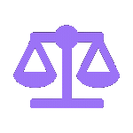

مُجتمع وَجُهد طُلابى لتبسيط المادة العلمية
شرح
Exams اختبارات
Books كتب دراسية
تابع محاضراتك مع Tanta Law School . شرح تفاعلى وتفصيلى لأجزاء المنهج والتركيز على أهم النقاط ثم الحل والتطبيق وتقييم مستواك والاستفادة من الأخطاء باحالتك الى مصادر المعلومة للتركيز عليها.
التعلم والاستذكار يتم باستخدام الثلاث طرق , مرئى وسمعى وبصرى.
Tanta
Law
School
 التعلم والاستذكار يتم باستخدام الثلاث طرق , مرئى وسمعى وبصرى.
التعلم والاستذكار يتم باستخدام الثلاث طرق , مرئى وسمعى وبصرى.